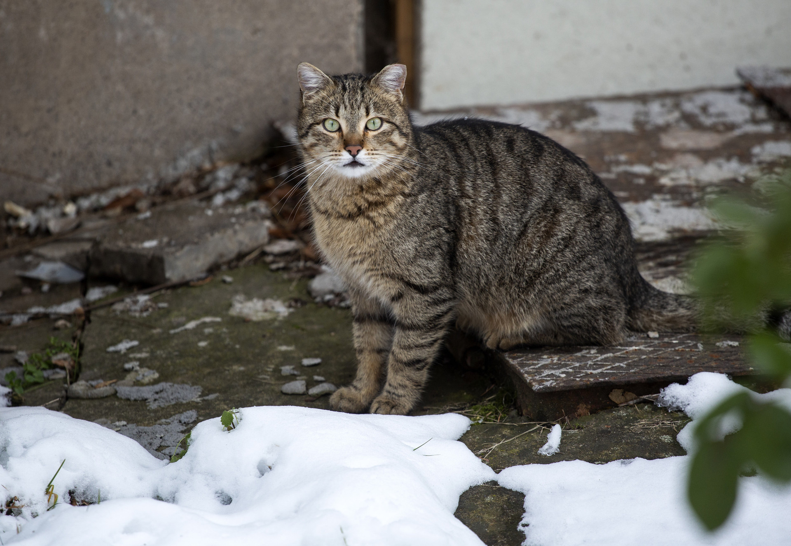
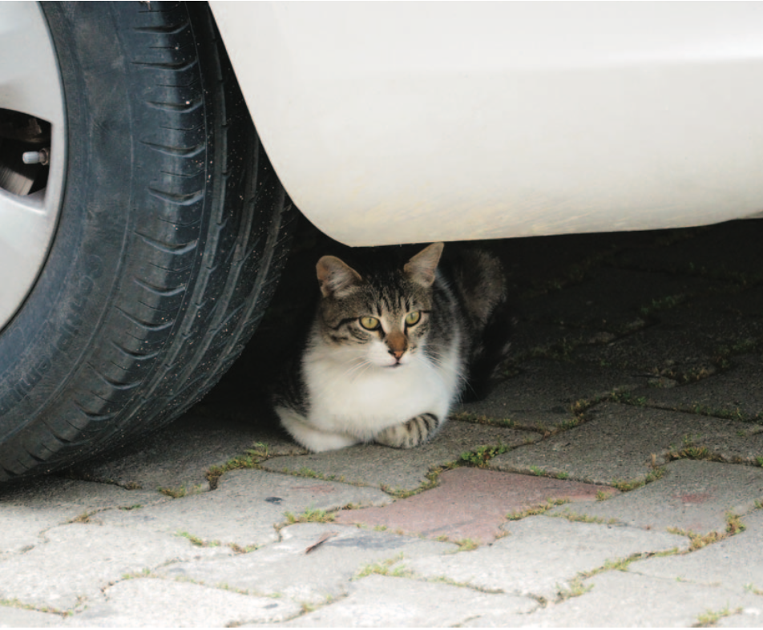

ПУХКАВИ ЛАПИЧКИ СТАРТИРА ТРАДИЦИОННАТА СИ КАМПАНИЯ ЗА РАЗДАВАНЕ НА ТАЛОНИ ЗА КАСТРАЦИЯ НА БЕЗДОМНИ КОТКИ ЗА 2025Г. В СОФИЯ
От началото на програмата над 16 600 котки са кастрирани, а хиляди бъдещи поколения са спасени от страданията на уличния живот.
За четиринайсета поредна година международната фондация за защита на животните ПУХКАВИ ЛАПИЧКИ провежда кампанията "Котките на Варна" за безплатна кастрация на безстопанствени котки. Проектът тази година стартира на 24 февруари /понеделник/ и се осъществява в сътрудничество с 9 ветеринарни клиники в града. Всеки, който се грижи за бездомно или дворно коте, може да се възползва, като заяви и вземе талон от сайта на ПУХКАВИ ЛАПИЧКИ и запише час за манипулацията в някоя от партньорските клиники на организацията.
Талонът покрива разходите за операцията на една бездомна котка, както и ваксинация против бяс, обезпаразитяване и престой в клиниката от 24ч. За да бъде разпозната, всяка кастрирана по програмата котка, ще бъде маркирана с поставяне на татуиран номер от вътрешната страна на едното ухо и изрязване на връхчето на другото. Това позволява отдалеч да се вижда, че животното е кастрирано, както и то да бъде идентифицирано по номера си.
От началото на програмата за раздаване на безплатни талони за кастрация на бездомни котки във Варна над 16 600 котки са кастрирани.
Заявяването на талони се случва с предварителна регистрация на сайта на ПУХКАВИ ЛАПИЧКИ, а гражданите – имат 30 календарни дни, за да вземат самите физически талони. А получаването започва на 25.02.2025г. всеки работен ден от 10:00 до 16:00 часа в офиса на фондацията, който се намира на: бул."Княз Борис I" 77, град Варна. Всеки човек може да получи максимум 2 талона, да ползва регистрация само с един имейл и имената от личната си карта. Регистрация на един и същи човек с повече от един имейл не се счита за валидна. Валидността на талоните е до 31.12.2025г. и могат да бъдат използвани в партньорските клиники.

СВЕТОВЕН ДЕН НА БЕЗДОМНИТЕ ЖИВОТНИ: ПУХКАВИ ЛАПИЧКИ АПЕЛИРА ЗА ХУМАННО ОТНОШЕНИЕ КЪМ ИЗОСТАВЕНИТЕ НА УЛИЦАТА ЧЕТИРИНОГИ
По данни на Световната здравна организация (СЗО) над 200 милиона кучета и двойно повече котки се скитат по улиците в световен мащаб
На 4 април – Световния ден на бездомните животни – международната организация за защита на животните ПУХКАВИ ЛАПИЧКИ обръща внимание на съдбата на милионите кучета и котки, оставени на произвола на улицата. В България организацията работи активно вече над 10 години, като провежда кастрационни кампании, предоставя ветеринарна помощ и сътрудничи с местни власти в борбата срещу проблема с бездомните животни. Във ветеринарната клиника на ПУХКАВИ ЛАПИЧКИ във Варна целогодишно се кастрират и лекуват животни в нужда, като в момента се провежда кампания в община Севлиево.
Методът “Хвани-кастрирай-ваксинирай-върни” е ефективен начин да се намали броят на безстопанствените животни. Организацията прилага този метод успешно и в България, като част от усилията си за устойчиво и хуманно управление на популацията.
По данни на Световната здравна организация (СЗО) над 200 милиона кучета и двойно повече котки се скитат по улиците в световен мащаб. Повечето стават жертва на тежките условия, на които животът на улицата ги обрича - глад, студ, жестокости, инциденти, борба за територия и много често смърт. Международната организация за защита на животните ПУХКАВИ ЛАПИЧКИ строго осъжда нехуманното отношение към животните като масово избиване на популации и други жестоки методи за преодоляване на проблема. В Световния ден на бездомните животни - 4 април, ПУХКАВИ ЛАПИЧКИ подчертава важността от прилагането на метода CNVR (“Хвани-кастрирай-ваксинирай-върни”) като единствения ефективен и хуманен начин за контрол на популациите на бездомни животни.
Ето как изглежда процесът в четири стъпки:
Стъпка 1: Хващане/залавяне
Екипът ни се състои от високо квалифицирани професионалисти, които са обучени да залавят, третират и транспортират кучета и котки по хуманен начин, без да ги стресират.
Стъпка 2: Кастрация
Всички животни минават медицински прегледи при постъпването си в клиниките, операцията е прецизна и се извършва под пълна упойка. Освен, че им спестява целия стрес около раждането и отглеждане на поколението, интервенцията служи и като превенция за някои животозастрашаващи заболявания. При женските кучета такова е заболяването на репродуктивните органи. При мъжките кучета се забелязва намаляване на половите хормони, което води до по-редки териториални битки и скитане.
Стъпка 3: Ваксинация
Ваксинирането на бездомни животни помага за намаляване на риска от вирусни заболявания като бяс - и защитава както животните, така и хората.
Стъпка 4: Връщане
След период на възстановяване, котките и кучетата се връщат обратно по местата , на които са били заловени. Всички преминали през процедурата животни биват идентифицарани - при котките с татуировка от вътрешната страна на ухото, а кучетата - с ушна марка.